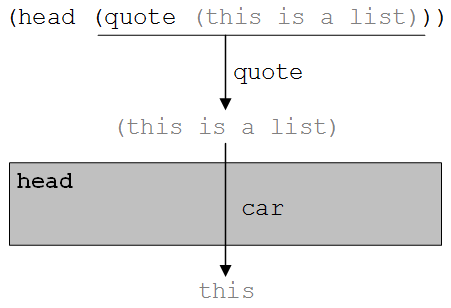

In the previous section, we looked at the fundamentals of Lisp – the list data structure, a variety of basic mathematical and list-oriented operators, expression evaluation, and the behavior of the Lisp interpreter. In this section we turn our attention to the question of how Lisp programs may be written.
A Lisp program is simply a collection of related functions that work together to solve a problem. In a sense, the expressions presented in the previous section can be considered “programs”, but they weren’t general purpose in the sense that they could only operate on numbers and quoted data, not variables, and were limited to accessing built-in operators, such as cond, cdr, and +. In order to be able to write truly useful programs we need a way to ‘extend’ Lisp beyond its built-in functions, to include user-defined functions.
The defun procedure is used to define functions; in fact, its name stands for define function. The format of the defun procedure is:
where function_name is a symbolic atom that specifies the name of the function being defined; each of the arguments are symbolic atoms that will be bound to input values; and function_body is a list that specifies the operations to be carried out on the arguments. Note that the function_body list can be a simple list of atoms or quite complex with many nested sublists.
While defun is used to define functions, it is not, itself, a traditional function. Most Lisp functions accept one or more elements as input, and return a single result value. The defun procedure returns function_name – the name of the function being defined – as its result. In addition, defun has the “side effect” of actually creating the function and adding its name to the collection of functions recognized by Lisp. Thus, when the Lisp Eval interpreter, illustrated in , encounters a list with the symbol defun as its first element, it will take the “yes” branch at the condition labeled “Is the first element of S non-standard?”
Now, let’s write a function. We will start with something very simple; a function called head that returns the first element of a list. This function will do exactly the same thing as the built-in function car, but will have a more meaningful name. So, if the head function were called in the following manner:
(head (quote(this is a list)))
we would expect it to return the atom this. In exactly the same manner that the expression (car (quote(this is a list))) would have.
Here is the definition of the function head:
The definition is a list. The first element of that list is the keyword defun, an atom. The second element of the list is the name of the function we are defining, head. The third element of every defun list is always itself a list. This list contains symbolic atoms that will act as placeholders for the function’s inputs.
Since the purpose of the head function will be to return the first element of a list, it needs a way to refer to its input list. In this example, the symbol L is used to represent the input list. There is nothing magic or special about using L, we could just as easily have used another symbol, such as LST or LIS. However, one symbol we could not have used for our list variable is LIST. That is because Lisp already uses list as the name of one of its list composition functions, as we discussed in the previous section.
You may have noticed that I am writing Lisp function names in lower case and Lisp argument names in upper case. The reason for doing so is to make it easier to quickly tell which atoms refer to functions and which refer to data. However, many Lisp interpreters are not “case sensitive”, which means that list, List, LiST, and LIST look identical to those interpreters and would thus refer to the same object.
Returning to our example, the fourth and final element of the head definition list is the list:(car L). This list represents the actions to be taken by the head function on the input list L; namely that the car of L will be computed and returned by this function.
At this point you might be saying, hold on a second L is an atom, not a list, and car can only be applied to lists, so what gives here? What gives is that since L is not quoted, it will be evaluated by the Lisp interpreter prior to car being called. So, the value bound to L, not L itself, is what will be passed to car. This behavior can be seen by tracing (car L) on the Eval graph of .
If head is passed a list, the first element of that list will be returned. Passing head an atom will generate an error, but that shouldn’t be a surprise, since passing an atom to car would also generate an error.
It is important to note that (car (L)) could not be used in the definition of this function. Why? The reason is that Eval would attempt to interpret the list (L). Since Eval treats all lists as function calls – unless they are quoted – it would look for a function named L, and since there is no such function, an error would be produced.
(a) The general format of the defun procedure
(b) Definition of a function that returns the first element (head) of a list
(c) Invocation and return of user-defined function head
An overview of user-defined functions in Lisp
When evaluated by the Lisp interpreter, the definition of head specified using defun will be added to the collection of known Lisp functions. During the rest of the current Lisp session – that is until the Lisp environment is restarted – you will be able to use head just like any other Lisp function.
Our definition of head constitutes a program. A program in Lisp consists of one or more defuns together with any needed data lists. Programs are generally stored in files. A program is run by loading its file into the Lisp environment and then calling its main function.
contains a summary of user-defined Lisp functions. Part (a) describes the format of the defun procedure. Part (b) presents our example user-defined function, head. Part (c) illustrates function invocation and return using the definition given in Part (b).
Let’s look at some additional function definitions. First up, we could do for cdr what we did for car – create a new function with the same functionality but a better name. Here is a definition for a new version of cdr called tail.
It also might be useful if we defined a group of functions that retrieved the second, third, and fourth elements of a list, since those are tasks that are performed quite frequently. One way of defining second, using only built-in functions, would be
We could also define second using head and tail.
Definitions of third and fourth are left as exercises. Most versions of Lisp include second, third, and fourth as built-in functions, but they are called by the more cryptic names cadr, caddr, and cadddr, due to their underlying definitions – i.e., cadr is implemented as(car(cdr L)), caddr as (car(cdr(cdr L))), and so forth.
In addition to list manipulation based functions, mathematical functions can also be written in Lisp. For example,
Defines a function that takes a numeric atom, a number, and returns its square – i.e., multiplies the number by itself. A slightly more complex mathematical oriented example would be a function that converts a temperature reading from degrees Fahrenheit to degrees Celsius. The conversion formula is C = (F – 32)/1.8. Here is the function definition in Lisp using the name f-to-c:
Calling (f-to-c 32) returns 0.0, while(f-to-c 212) returns 100.0.
The format of the cond function
As we learned in , the three basic control constructs of imperative programming are sequence, selection, and repetition. Functional languages such as Lisp also implement a form of these control constructs. At this point we have seen how to write Lisp procedures that consist of a sequence of nested operations, thus we have mastered sequence in Lisp
We now turn our attention to selection. Selection is implemented in Lisp using the “condition” operation, cond. The cond operator is similar to the If-Then-Else construction of , except that it allows many different “cases” to be tested instead of just two.
The format of the cond function is shown in . This function takes the form of a list, where the first element of the list is the atom cond. Following the function name are one or more condition/result lists. Each of these lists contains two elements. The first element is a condition, or predicate, that will return either true or false. If the condition is true, the associated result list will be evaluated and its result returned as the result of the cond function. If none of the conditions are true, cond will return nil. If multiple conditions are true, cond will return the result associated with the first true condition.
(a) Definition of function legal
(b) Input/Output behavior of legal
A program that illustrates selection via the cond function
Lisp contains a large number of functions, called predicates, that can be used to test for a wide range of conditions. Predicates exist to test whether two numbers are less than <, greater than >, equal =, less than or equal <=, greater than or equal >=, or not equal /=.
(a) presents the definition of a function that uses cond to perform a condition test. The function, called legal, determines whether a person is of legal drinking age by comparing their AGE to 21. If AGE is greater than or equal to 21, the function returns true, otherwise the function returns false. The input/output behavior of legal is illustrated in (b) using three different values for AGE, one less than 21, one equal to 21, and one greater than 21.
At this point it is important to say a few words about how Lisp represents true and false. False is implemented as the empty list, nil or (). Anything that is not false is considered true. So, for example the number 2, the symbol cow, and the list (chicken) would all be considered true, since they are not nil. Though every non-nil value is, by definition, true, Lisp includes a special atom, T, solely for indicating true. Using T makes Lisp programs easier to read and understand.
The cond of (a) has two condition/result pairs. The first condition/result pair reads ((>= AGE 21) T). Thus, if (>= AGE 21) is true, then its associated result, T, meaning true, will be returned. Assuming that (>= AGE 21) is not true, cond would next examine its second condition/result pair. This pair reads ( T nil). Placing a T in the condition portion of the second condition/result pair guarantees that the result of this pair, nil, will be returned if this pair is ever examined.
At first it may seem odd to ever use T in the condition portion of a condition/result pair, but in fact it is very common to do so. Use of a T condition in the final condition/result pair of a cond causes that pair to behave like the else clause of an If-Then-Else statement. In other words, if none of the “regular” conditions apply, you can be sure that the last one will, since it is always true – i.e., applies in all cases. One note of caution however, a T condition should only be used in the final condition/result pair of a cond. Any condition/result pairs placed after the T condition will never be evaluated, since execution of the cond will terminate at the first T condition.
Here is the definition of another function that uses the cond operator
This function returns the absolute value of a number. If the number is greater than or equal to zero, that number is returned unchanged. Otherwise (that is if the number is less than zero) the original number is subtracted from zero (giving a positive result) and that result is returned as the value of the function.
As was the case with imperative language If-Then-Else statements, cond functions may be nested within one another. contains a Lisp function based on the yuppie example illustrated in . While the input/output behavior of these two programs is different, comparing them gives a good feel for the differences between Lisp functions and imperative programs. The general rule used to define yuppies is the same in both figures – i.e., that yuppies are individuals who are under 40 and make $50,000 or more per year. The Lisp version of this program is a function that accepts two inputs, AGE and INCOME, and returns a list indicating whether or not the conditions of yuppiedom have been met. If the conditions have been met, the list (yuppie) will be returned. If the inputs for AGE and INCOME do not fall with in the yuppie range, other lists such as (too old), (too poor), and (old and poor) will be returned.
In addition to the nesting of cond operations, introduces a number of other concepts. The yuppie function is the first function we’ve written that uses multiple input – two numeric atoms in this case, AGE and INCOME. This function is also the first one to return a list, as opposed to an atom.
By now you should have a pretty good feeling for both sequence and selection in Lisp functions. Before we move on to the repetition control construct, two additional topics should be addressed. The first is input/output. The second is predicates for symbolic atoms and lists.
Basic text-based input is achieved in Lisp by use of the read function. The read function returns one element, either an atom or a list, entered by the user while the program is running.
A Lisp program that illustrates nested conditions